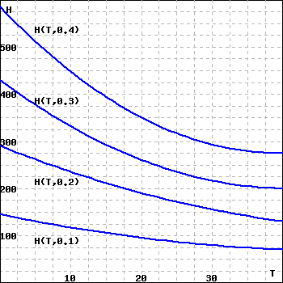

An airport can be cleared of fog by heating the air. The amount of heat required depends on the air temperature and the wetness of the fog. The figure below shows the heat \(H(T,w)\) required (in calories per cubic meter of fog) as a function of the temperature \(T\) (in degrees Celsius) and the water content \(w\) (in grams per cubic meter of fog). Note that this figure is not a contour diagram, but shows cross-sections of \(H\) with \(w\) fixed at \(0.1\text{,}\) \(0.2\text{,}\) \(0.3\text{,}\) and \(0.4\text{.}\)

(a) Estimate \(H_T(10, 0.2)\text{:}\)
\(H_T(10,0.2) \approx\)
(Be sure you can interpret this partial derivative in practical terms.)
(b) Make a table of values for \(H(T,w)\) from the figure, and use it to estimate \(H_T(T,w)\) for each of the following:
\(T = 10, w = 0.2\) : \(H_T(T,w) \approx\)
\(T = 20, w = 0.2\) : \(H_T(T,w) \approx\)
\(T = 10, w = 0.3\) : \(H_T(T,w) \approx\)
\(T = 20, w = 0.3\) : \(H_T(T,w) \approx\)
(c) Repeat (b) to find \(H_w(T,w)\) for each of the following:
\(T = 10, w = 0.2\) : \(H_w(T,w) \approx\)
\(T = 20, w = 0.2\) : \(H_w(T,w) \approx\)
\(T = 10, w = 0.3\) : \(H_w(T,w) \approx\)
\(T = 20, w = 0.3\) : \(H_w(T,w) \approx\)
(Be sure you can interpret this partial derivative in practical terms.)
Solution.
(a) The quantity
\(H_T(10,0.2)\) is approximated by an difference quotient. The first partial derivative with respect to
\(T\) is approximated by
\begin{equation*}
H_T(10,0.2) \approx { H(10+\Delta T, 0.2) - H(10, 0.2)\over \Delta T},
\end{equation*}
for small
\(\Delta T\text{.}\) We are free to choose
\(\Delta T\) to find values from the figure we are given. If we take
\(\Delta T = 10\text{,}\) we get the approximation
\begin{equation*}
H_T(10,0.2) \approx { H(20, 0.2) - H(10, 0.2)\over 10} \approx
{190 - 240\over 10} = -5.
\end{equation*}
(Note that you may get a different answer if you read different values from the graph.) The geometric meaning of the partial derivative
\(H_T(10,0.2)\) that we just approximated is the slope of the curve shown in the figure in the text corresponding to
\(w = 0.2\) at the point where
\(T= 10\text{.}\) In practical terms, we have found that for fog at
\(10^\circ\) C containing 0.1 g water per m
\({}^3\) of fog, a
\(1^\circ\) C increase in temperature will reduce the heat requirement for dissipating the fog by about 1~calories per cubic meter of fog.
(b) We can approximate values of
\(H(T,w)\) from the figure, giving the table below:
| \(w =\) |
0.1 |
0.2 |
0.3 |
0.4 |
| \(T = 10\) |
120 |
240 |
330 |
450 |
| \(T = 20\) |
100 |
190 |
260 |
350 |
| \(T = 30\) |
80 |
160 |
220 |
300 |
| \(T = 40\) |
70 |
130 |
200 |
280 |
This lets us approximate, using a difference quotient, each of the derivatives indicated. For
\(H_T(10,0.2)\text{,}\) we have
\begin{equation*}
H_T(10,0.2) \approx \frac{(190 - 240)}{10}
= -5.
\end{equation*}
(We could, of course, use a left or central difference instead.) Similarly, we have:
\begin{equation*}
H_T(20,0.2) \approx -3, H_T(10,w2) \approx -7,
H_T(20,0.3) \approx -4.
\end{equation*}
(c) Using our table of values, we can similarly calculate the partial derivatives with respect to
\(w\text{.}\) For
\(H_w(10,0.2)\text{,}\) we have
\begin{equation*}
H_w(10,0.2) \approx \frac{(330 - 240)}{0.1}
= 900.
\end{equation*}
(We could, of course, use a left or central difference instead.) Similarly, we have:
\begin{equation*}
H_w(20,0.2) \approx 700, H_w(10,w2) \approx 1200,
H_w(20,0.3) \approx 900.
\end{equation*}